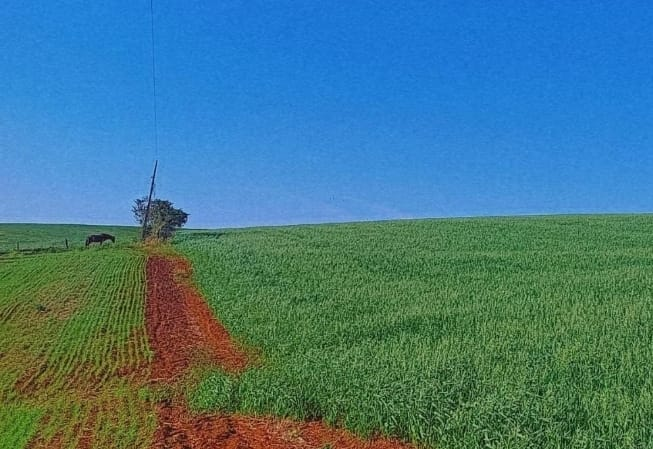
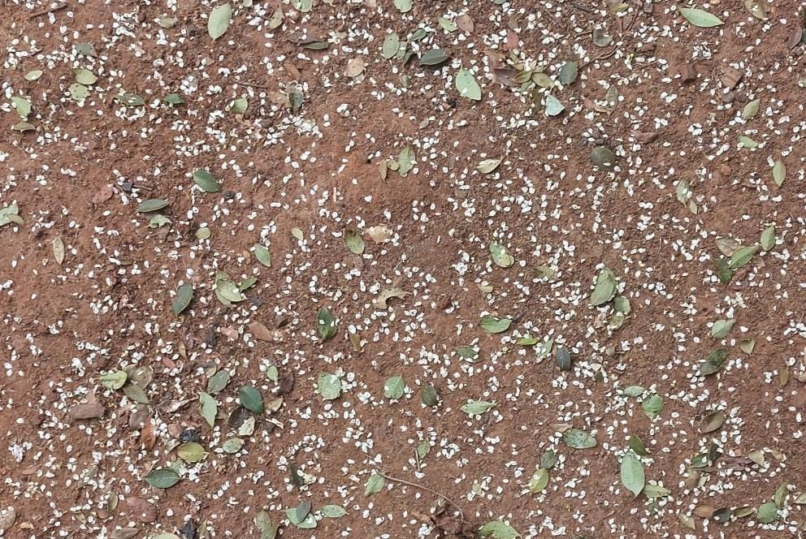
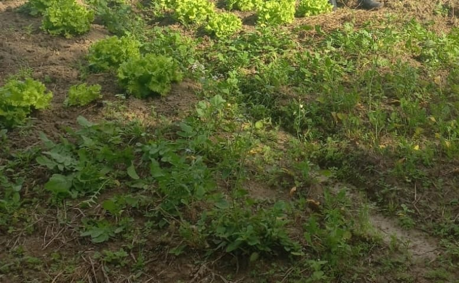
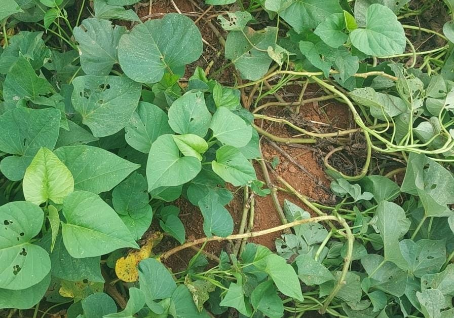
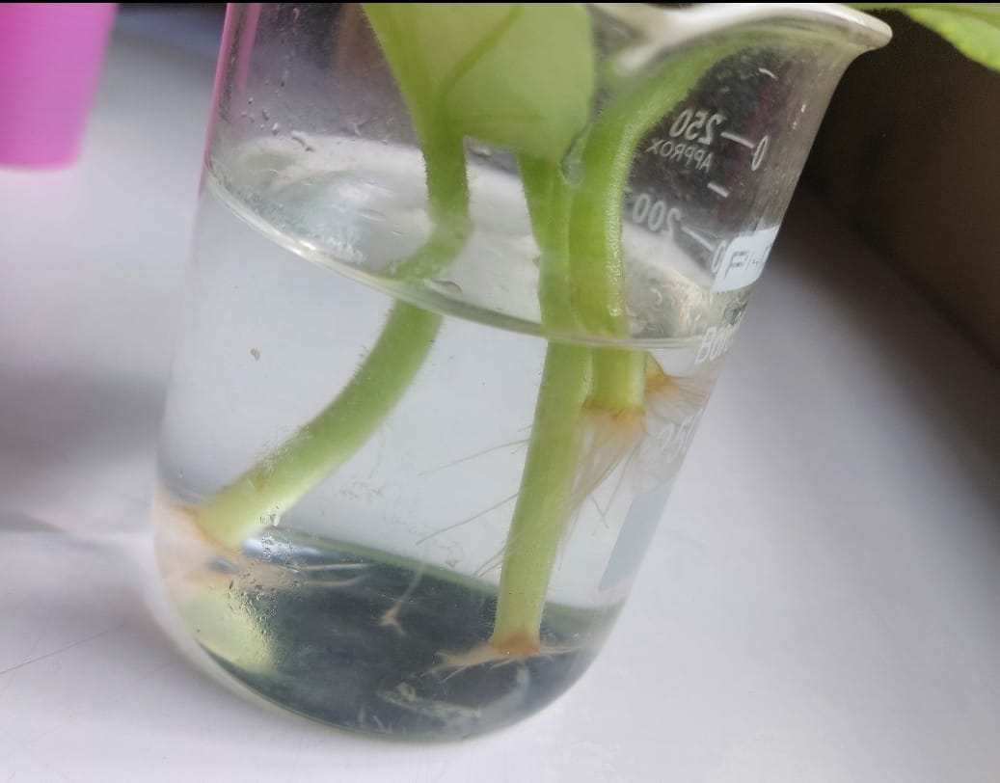
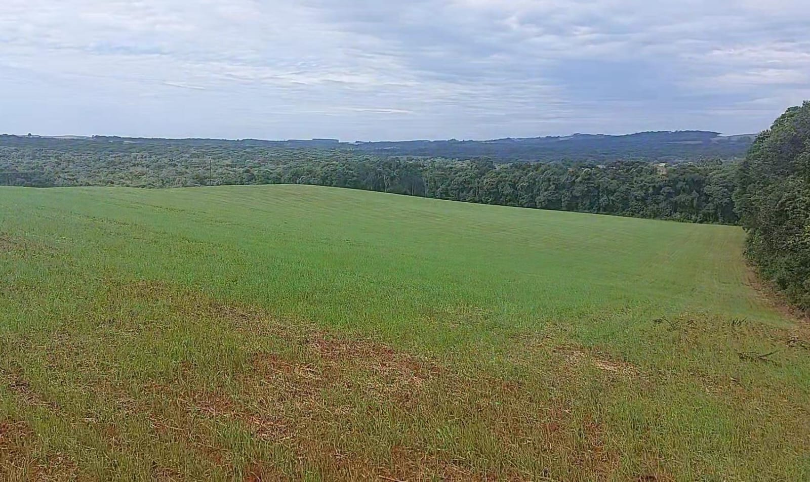
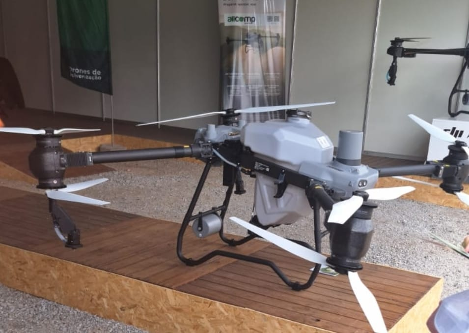

A agricultura sustentável vem se inovando cada vez mais e por ser uma prática inovadora muitos ainda não a adotaram, pois não tem conhecimento o suficiente sobre ela, mas aqui estão algumas sugestões que mostram que não há nada de tão complicado nesta prática de cultivo.
Altera os tipos de culturas plantadas em um campo ao longo do tempo, o que faz com que melhore a saúde do solo e reduza a incidência de pragas e doenças.
Semear diretamente no solo sem a necessidade de arar faz com que o solo seja mais conservado, reduz as erosões e melhora na retenção da água.
Investir em adubos orgânicos, como o esterco e outros nutrientes podem ajudar a enriquecer mais o solo e de uma forma natural.
Pode-se plantar culturas de cobertura, como leguminosas, que ajudam a proteger melhor o solo, melhorar a sua fertilidade e reduzir a erosão.
Adotar técnicas de irrigação mais eficientes, como o gotejamento e sistemas de captação de água da chuva podem reduzir o desperdício e melhorar a gestão de recursos hídricos.
Integrar árvores e arbustos nas áreas de cultivo é uma boa alternativa, pois melhora a biodiversidade e protege o solo.
Empregar tecnologias avançadas, como sensores e drones, de forma com que monitorem e gerenciem as práticas agrícolas com maior precisão e eficiência.
Ter maior investimento na capacitação de agricultores para que adotem práticas mais sustentáveis e compreendam melhor os impactos de suas atividades no meio ambiente também é uma boa opção.